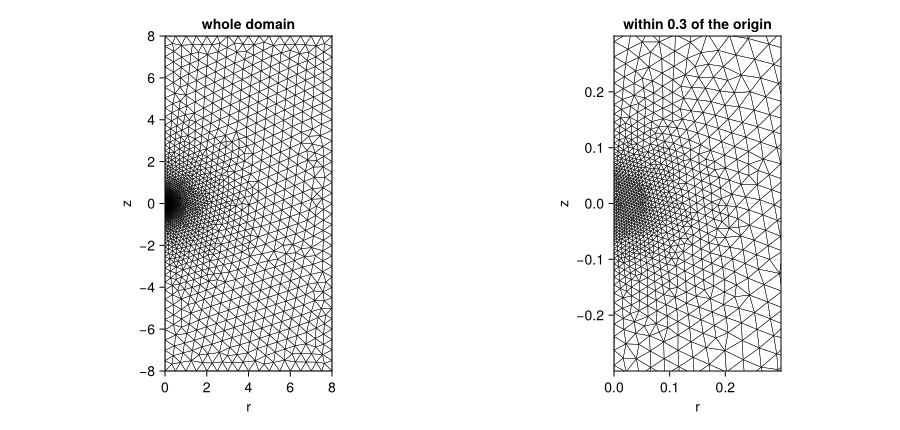
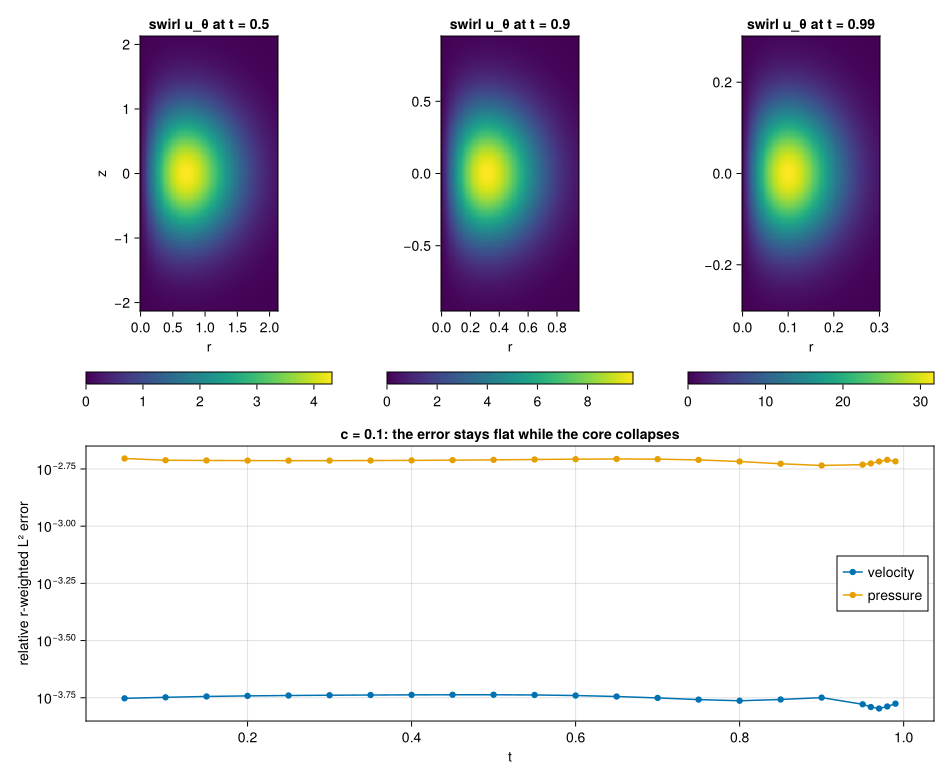
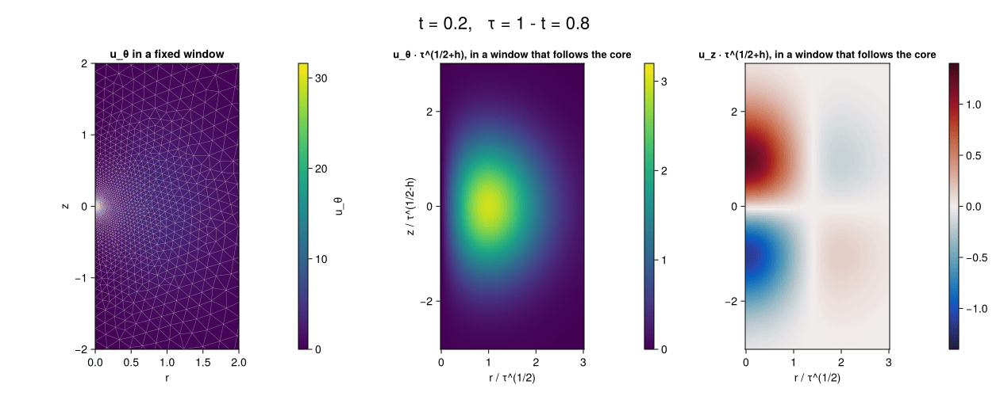

Axisymmetric swirl: a collapsing core
This page shows what a finite element run of our axisymmetric-with-swirl Navier–Stokes discretization does. The equations are the forced, incompressible, axisymmetric-with-swirl Navier–Stokes equations in the half plane (r, z), discretized with Taylor–Hood P2/P1 triangles on a mesh graded toward the origin. The flow is a manufactured vortex core that collapses self-similarly toward the origin, with the exponents of the leading core in the finite-time blowup construction of 1. radial scale τ^(1/2), axial scale τ^(1/2-h) and speeds of order τ^(-1/2-h), where τ = 1 - t and h = 0.01 (the paper takes any 0 < h < 1/100). The page reports how accurately a static graded mesh tracks that core, and at what cost.
This is our own discretization, and nothing more. It is not a reproduction, proof or disproof of the result of [1]. The blowing-up flow of that paper is not axisymmetric: only its leading core is, and the rest of the construction is three-dimensional (oscillatory pulses around the core, section 2.2 of the paper). Nothing here represents those pulses. The driver is our own manufactured field, and the force is defined as the residual of our equations at that field; it is singular at t = 1, whereas the force of the paper is smooth through the singular time.
Provenance. From the paper [1] we take the scalings and the qualitative picture of the inner core (its section 2.1): radial scale τ^(1/2), axial scale τ^(1/2-h) with 0 < h < 1/100, azimuthal and axial speeds of order τ^(-1/2-h) and radial speed O(τ^(-1/2)), a fluid that spirals inward and flows axially outwards on both sides of a layer near z = 0, pressure that falls toward the axis, and velocity u_θ that vanishes on the axis. Everything else is ours: the manufactured axisymmetric-with-swirl field (its profiles, the start-up ramp and the amplitudes), the force defined as its residual, the (r, z) weak form with Weighted(r), the graded mesh (designed in a mesh study run by an AI agent; mesh.geo and the scripts are in the repository), and every error and cost reported below.
The code is in examples/axisym_swirl/: mesh.geo (the mesh), manufactured.jl (the exact field and its force), axisym_swirl.jl (the problem, the solve and the error norms), figures.jl (renders the two figures below), animation.jl (renders the animation) and linear_residual.jl (the linear solver check below). The NavierStokes test group runs the example at two resolutions and asserts the convergence rates.
The equations
With velocity (uᵣ, u_θ, u_z), pressure p and kinematic viscosity 1, on r ∈ (0, R) and z ∈ (-R, R):
∂ₜuᵣ + uᵣ∂ᵣuᵣ + u_z∂_z uᵣ - u_θ²/r + ∂ᵣp = (1/r)∂ᵣ(r∂ᵣuᵣ) + ∂_z²uᵣ - uᵣ/r² + fᵣ
∂ₜu_θ + uᵣ∂ᵣu_θ + u_z∂_z u_θ + uᵣu_θ/r = (1/r)∂ᵣ(r∂ᵣu_θ) + ∂_z²u_θ - u_θ/r² + f_θ
∂ₜu_z + uᵣ∂ᵣu_z + u_z∂_z u_z + ∂_z p = (1/r)∂ᵣ(r∂ᵣu_z) + ∂_z²u_z + f_z
(1/r)∂ᵣ(r uᵣ) + ∂_z u_z = 0They are written in exactly this strong form, and each of the three momentum equations is integrated by parts with the weight r: ibp = Dict(eq => Weighted(r)). That is the standard axisymmetric Galerkin form. The measure is r dr dz, the viscous flux is r ∇u, and the zero-order terms u/r, uᵣu_θ and u_θ² that remain are bounded on the axis, where uᵣ = u_θ = 0. Without the weight the Laplacian would be tested in the wrong measure. The continuity equation is first order and stays strong. It is written already weighted, 0 ~ Dr(r * ur) + r * Dz(uz), and paired with the pressure.
Weighted is not exported by FiniteElementMethod; it lives in PDEBase:
using PDEBase.StrongForm: WeightedThe driver
The exact field, with ξ = r/√τ, ζ = z/τ^(1/2-h), the start-up ramp s(t) = 1 - exp(-(t/0.1)²) and G(ζ) = (ζ + 0.05) exp(-ζ²/2), is
uᵣ = -s τ^(-1/2) ξ exp(-ξ²/2) G′(ζ)
u_z = s τ^(-1/2-h) (2 - ξ²) exp(-ξ²/2) G(ζ)
u_θ = 5 s τ^(-1/2-h) ξ exp(-ξ²/2) exp(-ζ²/2)
p = -(25/2) s² τ^(-1-2h) exp(-ξ²) exp(-ζ²)It is divergence free (it comes from a Stokes streamfunction), uᵣ and u_θ vanish on the axis, and the pressure balances the swirl (∂ᵣp = u_θ²/r). The ramp makes every field and its time derivative zero at t = 0, so the zero initial state is consistent. The flow is an inward spiral with axial outflow above and below z = 0.
The force f is the residual of the equations above at this field. It is ours: it is singular at t = 1 and grows like τ^(-3/2-h). Because the field is an exact solution of the forced system, the error the run reports is the discretization error and nothing else.
The force expressions are thousands of characters long. The front end compiles source terms without common subexpression elimination and evaluates them at every quadrature point and test function, so manufactured.jl compiles them once with build_function(...; cse = true) and registers the compiled functions with @register_symbolic. They depend on (t, r, z) only, so the analysis accepts them as sources:
const FORCE_FUNCTIONS = Tuple(build_function(f, t, r, z; expression = Val(false), cse = true) for f in FORCE[1:3])
force_r(t, r, z) = FORCE_FUNCTIONS[1](t, r, z)
@register_symbolic force_r(t, r, z) # and force_t, force_zOn a small case (c = 0.4, τ_end = 0.5, 1 691 unknowns) the registered force makes the solve take 0.5 s instead of 35 s, with the same errors to ten digits. The saving grows with the problem.
The mesh
mesh.geo is the rectangle r ∈ [0, 8], z ∈ [-8, 8] with the axis r = 0 as one boundary, and a size field about the origin: the target element size is h(ρ) = min(hmax, max(hmin, c ρ)) for ρ the distance to the origin, with hmin = c √τ_end / 2 and hmax = 5c. Halving c therefore halves the element size everywhere. The grading is geometric, so every ball of radius ρ holds about the same number of elements, which is what a self-similar core needs: at time τ the field has scale √τ and sits at ρ ~ √τ. The axial and radial scales differ by τ^(-h), at most 1.1 for τ ≥ 1e-4, so isotropic elements are the right choice.

The mesh is built from the .geo file through the Gmsh API; parameters reach it with gmsh.onelab.setNumber before gmsh.open, and FerriteGmsh.togrid() converts it:
gmsh.onelab.setNumber("Parameters/c", [c])
gmsh.open("examples/axisym_swirl/mesh.geo")
gmsh.model.mesh.generate(2)
grid = FerriteGmsh.togrid()The facet sets are axis, outer, top and bottom.
Why static. The element count grows like (1/c²) log(hmax/hmin), so every further decade of τ_end adds a fixed number of elements. Remeshing in stages would save only that logarithmic factor and needs the solution transferred between meshes, which the package has no API for. The early steps pay for fine elements that the solution does not need yet; the implicit steps there are cheap.
Why R = 8. The initial core has scale 1 and the field decays like exp(-ξ²/2), which is 1.3e-14 at r = 8 and smaller still for every τ < 1, since the core only shrinks. A larger box buys nothing, and a smaller one would make the far boundary data matter early.
Discretization and solve
@variables ur(..) ut(..) uz(..) p(..)
Ω = MeshDomain(grid)
Γaxis, Γout, Γtop, Γbottom = boundarypiece.(Ω, (:axis, :outer, :top, :bottom))
eqs = [
Dt(UR) + UR * Dr(UR) + UZ * Dz(UR) - UT^2 / r + Dr(P) ~ laplacian(UR) - UR / r^2 + force_r(t, r, z),
Dt(UT) + UR * Dr(UT) + UZ * Dz(UT) + UR * UT / r ~ laplacian(UT) - UT / r^2 + force_t(t, r, z),
Dt(UZ) + UR * Dr(UZ) + UZ * Dz(UZ) + Dz(P) ~ laplacian(UZ) + force_z(t, r, z),
0 ~ Dr(r * UR) + r * Dz(UZ),
]
P2, P1 = Lagrange{RefTriangle, 2}(), Lagrange{RefTriangle, 1}()
disc = FEMDiscretization(
Ω, t; spaces = Dict(ur => P2, ut => P2, uz => P2, p => P1), pairing = Dict(eqs[4] => p),
ibp = Dict(eqs[i] => Weighted(r) for i in 1:3), natural = [Γaxis], initializealg = CheckInit(), abstol
)(UR, UT, UZ, P abbreviate ur(t, r, z) and so on, and laplacian(w) is (1/r) Dr(r Dr(w)) + Dz(Dz(w)); axisym_problem in the example has the whole definition.)
Elements. Taylor–Hood P2/P1, which is stable for the saddle-point structure. The measured pressure rate below is the Taylor–Hood rate of 2.
Axis.
uᵣ = u_θ = 0are Dirichlet conditions.u_zhas no condition there and so carries the natural condition, which is declared withnatural = [Γaxis]; the weighted fluxr ∂ᵣu_zvanishes on the axis anyway. The log of the run has no boundary warning.Far boundaries.
outer,topandbottomcarry the exact velocity, which is about 1e-14 of the core values atR = 8, so they are effectively no-slip; the exact values are kept so that the convergence check is clean.Pressure. There is no equation for it, and the package tests
∇pstrongly, so there is no do-nothing condition: the level is pinned to the exact pressure onouter, as in the Navier–Stokes: flow past a cylinder.Time integration. The system is an index-2 DAE. It is integrated with
DFBDF, withCheckInit()because the zero start is consistent (the ramp is zero att = 0), and with UMFPACK for the linear systems.abstolis passed toFEMDiscretizationand applies to the differential rows only; the pressure and Dirichlet rows stay out of the error control.Newton matrix.
NLNewton(new_W_dt_cutoff = 0)refreshes the Newton matrix at every step. On the DFG example the default cutoff gives identical results and is faster, but here, atc = 0.05, the default leaves the pressure error att = 0.522% larger (5.82e-4 instead of 4.76e-4, the velocity error unchanged to six digits) for a solve that is 16% faster (85 s instead of 101 s), so the example uses the refresh.Direct solver and size. UMFPACK holds the factors in memory: the peak of a run is 3.9 GiB at 124 thousand unknowns and 9.5 GiB at 490 thousand (see the cost table). Its accuracy was measured on the Newton matrix
Witself.examples/axisym_swirl/linear_residual.jlsteps a run tot = 0.5, savesWand a representative right-hand side (minus the residual at the accepted state, with the time advanced by one step; not DFBDF's own Newton right-hand side), and factorizes that one matrix with each solver in a process of its own:unknowns solver factor and solve relative residual ‖W x - b‖/‖b‖peak memory of the process 124 138 UMFPACK 1.1 s 6.4e-15 1.4 GiB 124 138 KLU 1015 s 8.0e-6 8.4 GiB 490 169 UMFPACK 4.9 s 2.6e-14 4.0 GiB 490 169 KLU not finished after 25 min at least 20 GiB, still growing UMFPACK's default settings solve this system to rounding level at both sizes, about nine orders of magnitude below the spatial errors in the table below (1e-5 to 1e-6 for the velocity), so the linear solves do not contaminate those errors. KLU is both slower and less accurate here, which is why every run on this page uses UMFPACK. The residual was measured at one state,
t = 0.5, not along the whole run, and only for this system; it says nothing about other saddle-point matrices. Every step of the runs needed about one Newton iteration (203 iterations for 202 steps tot = 0.5atc = 0.05and 207 for 203 atc = 0.025, with no Newton failure), so a linear solve error would not be iterated away; here it is at rounding level. For problems where UMFPACK's residual is poor, LinearSolve.jl pull request #1414 proposes opt-inpivot_toleranceandstrategykeys forUMFPACKFactorization; it was open when this page was written, so it is a route for large problems once a release contains it, not something this example uses.
What the run shows
The error is the relative r-weighted L² error √(∫ r e² dr dz) / √(∫ r u² dr dz) against the exact field, from the solver's dense output and an order-6 quadrature; the velocity error combines the three components. The run goes to τ_end = 1e-2, that is t = 0.99, with abstol = reltol = 1e-8. The size parameters are c = 0.1, 0.05 and 0.025, i.e. 32 thousand, 124 thousand and 490 thousand unknowns.
t | c = 0.1 velocity / pressure | c = 0.05 velocity / pressure | rate | c = 0.025 velocity / pressure | rate |
|---|---|---|---|---|---|
| 0.5 | 1.83e-4 / 1.95e-3 | 2.21e-5 / 4.76e-4 | 3.05 / 2.03 | 2.72e-6 / 1.19e-4 | 3.03 / 2.00 |
| 0.9 | 1.78e-4 / 1.84e-3 | 2.14e-5 / 4.78e-4 | 3.05 / 1.95 | 2.68e-6 / 1.19e-4 | 3.00 / 2.01 |
| 0.99 | 1.68e-4 / 1.92e-3 | 2.23e-5 / 4.86e-4 | 2.91 / 1.98 | 2.71e-6 / 1.19e-4 | 3.04 / 2.02 |
All nine cells were measured by running axisym_solve at the three values of c. A rate is log₂ of the error at one c over the error at the next, which halves the element size.
The rates are the Taylor–Hood rates: 3 for the velocity and 2 for the pressure. Between t = 0.5 and t = 0.99 the velocity grows about sevenfold and the core shrinks from radius about 0.7 to about 0.1, while the relative error stays flat on all three meshes. That is the point of the graded mesh: the element count per core length stays the same as the core collapses.

Absolute errors grow with the fields (the pressure scales like τ^(-1-2h)), so the page reports relative errors throughout.
Animation

The animation is the run at the coarsest mesh of the page, c = 0.1 (32 thousand unknowns), sampled from the solver's dense output at 72 frames evenly spaced in log τ from τ = 0.8 to τ = 0.01 (t = 0.2 to 0.99), with the time and τ in the title. The left panel is a fixed window, r ∈ [0, 2], z ∈ [-2, 2], with the mesh drawn over it and one colour scale for all frames: the core shrinks to a point and u_θ grows by a factor of about ten, so the early frames are dim. The middle and right panels follow the core: the coordinates are r/τ^(1/2) and z/τ^(1/2-h) and the fields are multiplied by τ^(1/2+h), the scalings of the paper [1]. In these units the picture is almost fixed, which is the self-similarity of the manufactured field, apart from the start-up ramp in the first frames. It is rendered by examples/axisym_swirl/animation.jl, which reuses axisym_solve, and the file docs/src/assets/axisym_swirl_animation.fnv1a is checked in the same way as the figures (see below).
Cost
All runs went to t = 0.99, in 427 to 428 accepted steps with no rejected step and no Newton failure, with one Julia process on the forge host (Julia 1.12.1, UMFPACK, 32 cores, other jobs running). The solve time excludes compilation, about 55 s per process, and the peak resident memory includes it (a process that only compiles and runs a 1.7 thousand-unknown case already holds 2.1 GiB).
c | cells | unknowns | Newton matrix refreshes | mesh | assembly set-up | solve | peak memory |
|---|---|---|---|---|---|---|---|
| 0.1 | 4 870 | 32 324 | 74 | 0.04 s | 1 s | 23.5 s | 2.7 GiB |
| 0.05 | 18 894 | 124 138 | 77 | 0.18 s | 5 s | 101 s | 4.0 GiB |
| 0.025 | 75 004 | 490 169 | 77 | 0.97 s | 24 s | 421 s | 9.5 GiB |
"Assembly set-up" is the time of axisym_problem, which builds the discretization. The solve time grows slightly faster than the unknown count: 4.3 times for 3.8 times the unknowns, then 4.2 times for 3.9 times.
Limits
- The run stops short of
t = 1. The prescribed field and its force are singular att = 1, so no finite mesh or time step reaches it. A static mesh resolves the core only down toτ ≈ τ_endby construction. The runs here stop att = 0.99. - Axisymmetric only. The flow has no dependence on the angle; nothing here represents the non-axisymmetric structure of the paper's blowing-up flow.
- Static mesh. There is no remeshing and no solution transfer between meshes.
- Direct solver and memory. The solve is a sparse direct factorization. Its memory grows faster than the unknown count, 9.5 GiB peak at 490 thousand unknowns, and no iterative saddle-point solver is provided.
- CPU only. There is no GPU path.
- The driver is manufactured. The accuracy statements are about the discretization of a prescribed field; they say nothing about the stability of free Navier–Stokes flow.
Reproducing the numbers and the images
julia --project=docs examples/axisym_swirl/axisym_swirl.jl 0.1 0.01 # c, τ_end
julia --project=docs examples/axisym_swirl/figures.jl # renders the two figures into docs/src/assets
julia --project=docs examples/axisym_swirl/animation.jl # renders the animation (one more solve, c = 0.1)
GROUP=NavierStokes julia --project=. -e 'using Pkg; Pkg.test()'The two figures and the animation are committed in docs/src/assets and the documentation build does not solve anything. axisym_swirl.fnv1a holds a checksum of the files the figures are rendered from, and axisym_swirl_animation.fnv1a one of the files the animation is rendered from; the NavierStokes test group fails when those files change without a re-render.
References
- OpenAI, Finite time blowup for Navier–Stokes, PDF created 8 September 2026 (no arXiv number or other date is printed in it), https://cdn.openai.com/pdf/32d9f210-8b73-45e0-91bc-82a30aef8a9a/navier-stokes.pdf. Theorem 1.1: for every viscosity
ν > 0there is a smooth, compactly supported force and a solution of the three-dimensional incompressible Navier–Stokes equations that starts from rest and has unbounded velocity ast ↑ 1while its kinetic energy stays uniformly bounded. The author line of the paper reads "OPENAI". We use its section 2 (the inner core) and the exponents of its section 3.1.